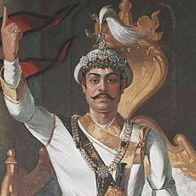

Prithivi Narayan Shah Dev
Biography:
Prithivi Narayan Shah Dev was born on 27th Poush, 1779 B. S. (11 January, 1723 A.D.).
His father Nara Bhupal Shah Dev was the King of Gorkha and mother Kaushalyavati Devi
was the queen of Gorkha. Prithivi Narayan Shah Dev was the last ruler of the Gorkha Kingdom
and first monarch of Kingdom of Nepal from 25 September, 1743 to 11 January, 1775
(also called Kingdom of Gorkha) in the South East Asia. Prithvi Narayan Shah Dev is credited for
starting the campaign for the unification of Nepal. He died at the age of 52 in Devighat,
Nuwakot, Kingdom of Nepal on 1st Magh 1831 B.S. (15 January, 1775).